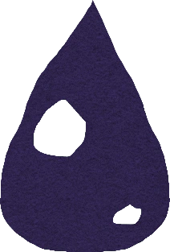
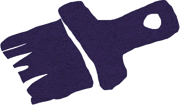
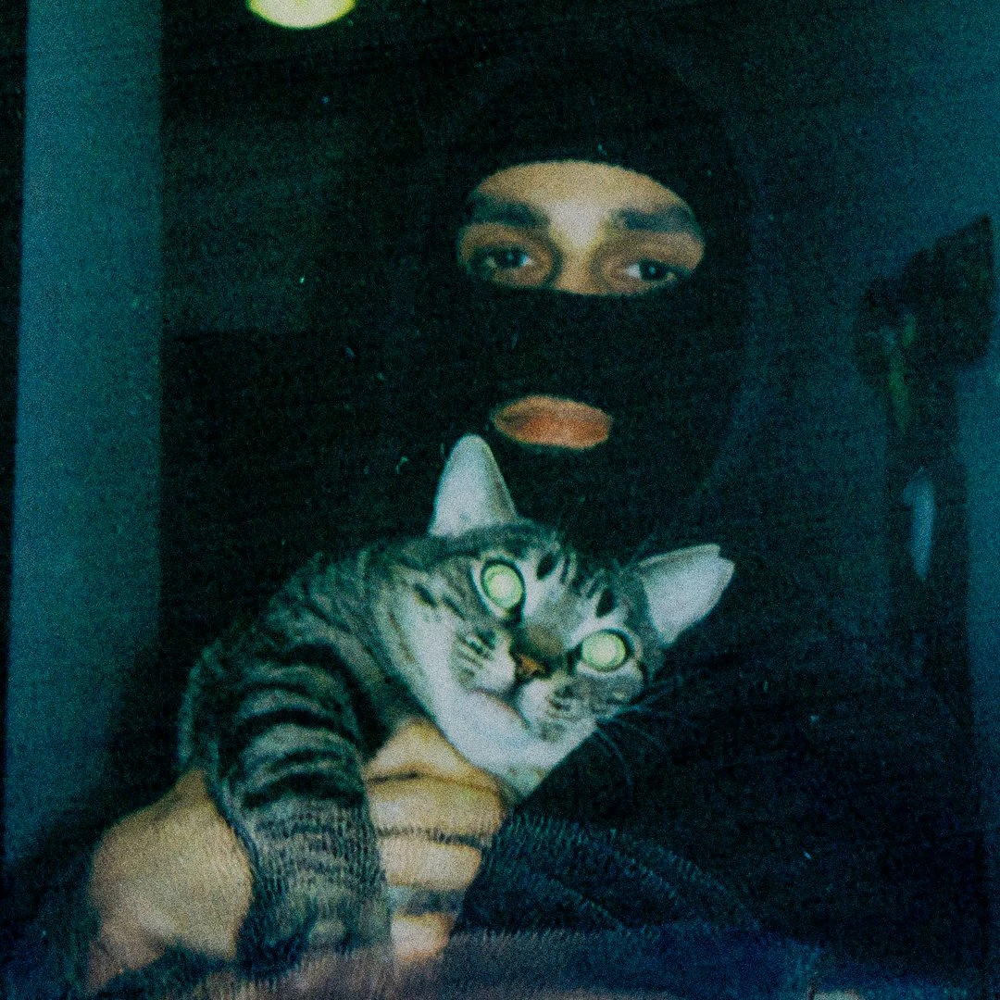

Dibuja sin distracciones con solo dos herramientas. En Diorame, cada capa se posiciona automáticamente en el espacio 3D, sin configuración manual ni líos y sin sliders de profundidad.

Blob
Formas rellenas orgánicas con modos de simetría, dibujar dentro y dibujar detrás

Brush
Trazos en tres estilos: fluído, uniforme o tinta, y con grosor ajustable no destructivo
Incluye dibujar dentro, dibujar detrás, modo simetría, borrador y una herramienta de texto con 5 fuentes propias. Exporta como PNG, SVG o vídeo, o guarda tu proyecto como archivo .dior y continúa cuando y donde quieras.
Aquí es donde todo cobra vida. Aplica movimientos de cámara cinemáticos, profundidad de campo y efectos de postprocesado estilo risografía, entre otros, para convertir tu ilustración en una escena por explorar.
Aplica 12 efectos de postprocesado a tu ilustración: trama de risografía procedural, Pixel Art con cuantización de paleta y dithering Bayer, profundidad de campo, grano de película, aberración cromática, niebla atmosférica, brillo y más. Más 10 modos de cámara cinemáticos con parallax y vibración de cámara en mano opcional.

Diorame es una idea de @dumaker
Illustrator™, Designer™ y Bacín™ de Albacete, España
Diorame es un proyecto libre e independiente. Si quieres apoyarlo, puedes hacerlo en mi ko-fi
Diorame es la app de dibujo que siempre hubiera querido tener
Así que decidí hacerla realidad
Una herramienta creativa gratuita en el navegador, para ilustrar en 2D y explorar en 3D, como un diorama digital, ¡sin complicaciones!
Empieza a dibujar con DioramePreguntas Frecuentes
Diorame es una herramienta de ilustración gratuita en el navegador que te permite dibujar en 2D y explorar tu trabajo en 3D al instante. Cada capa se coloca automáticamente a una profundidad diferente, creando efectos parallax brutales y movimientos de cámara cinemáticos, y todo sin necesidad de conocimientos de 3D o controles complejos.
Diorame no pretende reemplazar a Procreate, Adobe Fresco, Adobe Illustrator o Clip Studio Paint, éstas son herramientas profesionales con años de desarrollo. Diorame es algo diferente: una herramienta de ilustración gratuita en el navegador centrada en la simplicidad, la estética tipo risografía y la profundidad 3D automática. Si quieres una app de dibujo sin instalación ni cuenta que convierte tus ilustraciones por capas en escenas 3D cinemáticas, Diorame es la única que hace exactamente eso. Piénsalo menos como un competidor y más como un espacio creativo que nunca antes habías tenido.
Completamente gratis, sin cuenta. Y para siempre. No hay truco. Abre la app y empieza a dibujar. Sin instalación, sin registro.
Diorame funciona en cualquier navegador moderno de escritorio o tablet: Chrome, Firefox, Safari y Edge. Está diseñado exclusivamente para escritorio y tablet; los móviles no están soportados por diseño. En un móvil simplemente no hay suficiente espacio en pantalla para sacar todo el partido a Diorame, ¡lo siento!
Dos herramientas principales: Blob, para formas rellenas orgánicas, y Brush, para trazos en tres estilos, fluído, uniforme y tinta. También incluye un Borrador, una herramienta de Texto con 5 fuentes propias y una herramienta de Mover para transformar capas enteras. Los modificadores de dibujo incluyen simetría, dibujar dentro, dibujar detrás y modo orgánico.
La mayoría de las apps de dibujo son planas. Diorame coloca automáticamente cada capa en el espacio 3D, así que cuando cambias al modo VIEW obtienes profundidad parallax real y movimientos de cámara cinemáticos, sin rigging, sin posicionamiento manual. Es la única herramienta de dibujo gratuita en el navegador construida alrededor del concepto de diorama.
¡Que va! Diorame es, ante todo, una app de dibujo. Las herramientas Blob y Brush, el sistema de capas, las paletas de color, los modificadores y demás, todo está diseñado para que dibujar sea simple y disfrutable por sí solo. El parallax 3D, las cámaras cinemáticas y los efectos de postprocesado están ahí cuando los quieres, pero puedes ignorar el modo VIEW completamente y simplemente dibujar. Sin presión, sin complejidad.
Sí. Diorame está construido alrededor de la estética Risografía, paletas de color fijas, trama halftone procedural, simulación de extensión de tinta y efectos de registro. El postprocesado Riso usa un pipeline de tres pasadas que replica la textura e imperfección de las impresiones Riso reales.
12 efectos en total: trama Risografía procedural, Pixel Art con cuantización de paleta y dithering Bayer, profundidad de campo, grano de película, aberración cromática, niebla atmosférica, brillo, viñeta, distorsión de lente, partículas, overlay grunge y vibración de línea. Todos ajustables y combinables.
Amo el pixel art, así que no podía faltar un efecto de postprocesado dedicado que conviera tu ilustración en pixel art en tiempo real, con tamaño de píxel configurable (2–16), profundidad de color (2–32 colores) e intensidad de dithering Bayer. Funciona sobre tu ilustración 2D por capas, incluyendo los efectos Riso, grano o aberración cromática.
Sí. Diorame exporta como PNG, SVG, SVGZ (vector comprimido) y vídeo (WebM/MP4) con la cámara cinemática capturada en directo. También puedes guardar tu proyecto como archivo .dior y continuar trabajando en él más tarde, o llevártelo a otro dispositivo.
10 animaciones de cámara predefinidas: Avance, Espiral, Yoyo, Pulso, Giro, Arco, Grúa, Travelling, Órbita y Zoom. Cada una funciona con la profundidad parallax 3D de tus capas. También puedes añadir vibración de cámara en mano en tres niveles de intensidad y ajustar la velocidad cinemática general.
Sí. Diorame está optimizado para uso en tablet y funciona con cualquier lápiz óptico compatible con tu navegador, incluyendo Apple Pencil en iPad. Los gestos táctiles para zoom, desplazamiento, órbita y deshacer/rehacer están totalmente soportados.
Guarda tu proyecto a menudo, Diorame funciona completamente en el navegador y, como cualquier app web, puede bloquearse o cerrarse por accidente. Usa el botón de guardar regularmente y mantén tu archivo .dior a mano. Además: aunque Diorame incluye un exportador MP4 integrado, para la mejor calidad de vídeo recomendamos usar la grabación de pantalla nativa de tu dispositivo (iPad, Windows y macOS tienen opciones integradas que capturan con calidad total de la pantalla).
Puede. Combinar varios efectos de postprocesado simultáneamente (especialmente en equipos poco potentes) puede ralentizar los movimientos de cámara cinemáticos en el modo VIEW. Si notas ralentización, prueba a reducir el número de efectos activos o bajar su intensidad. El modo DRAW siempre es fluido independientemente de la configuración de efectos.
Diorame se inspiró en Graintouch, una preciosa y única app de dibujo para iPad de Iorama Studio, concretamente en su estética Risografía, su simplicidad y sus herramientas de dibujo orgánico. Pero la idea central que hace único a Diorame es completamente original: profundidad 3D automática por capa, parallax real en el modo VIEW, movimientos de cámara cinemáticos y postprocesado estilo Risografía. Nada de eso existe en Graintouch.
Soy ilustrador, diseñador y dibujante, no programador. Durante años creí que la app de dibujo que tenía en mi cabeza sería inalcanzable, para siempre. Pero la IA cambió eso. No como sustituto de la creatividad, el talento o la chispa irremplazable que hace que el arte sea humano (joder, sí, ¡rechazo esa idea completamente!), sino como colaborador que me permitió construir algo que no podría haber construido solo.
El código es mío en el sentido que, creo, importa realmente: cada decisión, cada funcionalidad, cada restricción es intencional y viene de años pensando, intuyendo y sintiendo cómo debería ser mi app de dibujo ideal. La IA escribió la sintaxis. Yo mantuve la visión.
Diorame es gratuito y de código abierto (licencia CC BY-NC-SA 4.0, repositorio público en GitHub) porque una herramienta hecha para artistas debería pertenecer a los artistas.